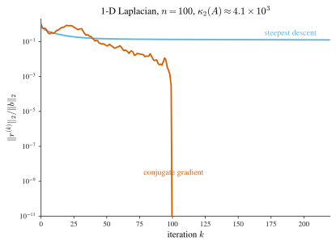

5 Iterative Methods for Linear Systems
\[ \newcommand{\R}{\mathbb{R}} \newcommand{\C}{\mathbb{C}} \newcommand{\N}{\mathbb{N}} \newcommand{\E}{\mathbb{E}} \newcommand{\eps}{\varepsilon} \newcommand{\abs}[1]{\left\lvert #1 \right\rvert} \newcommand{\norm}[1]{\left\lVert #1 \right\rVert} \newcommand{\ninf}[1]{\left\lVert #1 \right\rVert_{\infty}} \newcommand{\ntwo}[1]{\left\lVert #1 \right\rVert_{2}} \newcommand{\none}[1]{\left\lVert #1 \right\rVert_{1}} \newcommand{\inner}[2]{\left\langle #1,\, #2 \right\rangle} \newcommand{\bigO}{\mathcal{O}} \newcommand{\dd}{\mathrm{d}} \newcommand{\diff}[2]{\frac{\mathrm{d} #1}{\mathrm{d} #2}} \newcommand{\pdiff}[2]{\frac{\partial #1}{\partial #2}} \newcommand{\spec}{\rho} \newcommand{\cond}{\kappa} \newcommand{\Span}{\operatorname{span}} \newcommand{\rank}{\operatorname{rank}} \newcommand{\tr}{\operatorname{tr}} \newcommand{\diag}{\operatorname{diag}} \newcommand{\argmax}{\operatorname*{arg\,max}} \newcommand{\argmin}{\operatorname*{arg\,min}} \newcommand{\defeq}{:=} \]
The direct methods of Chapter 4 factor \(A\) once, an \(LU\) decomposition (Definition 4.1), or its Cholesky specialization for the symmetric case, and then solve \(Ax=b\) exactly up to rounding. The catch is the price tag: the factorization is \(\bigO(n^3)\), and worse, it tends to fill in zeros, so even a sparse \(A\) generally has dense factors. That is exactly the wrong behaviour for the systems that dominate scientific computing, where \(n\) runs into the millions but each row of \(A\) has only a handful of nonzeros. The tridiagonal cubic-spline system of Section 1.5 (Definition 1.3) was our first taste of such structure; a discretized differential equation is the same story writ large.
The escape is to stop asking for the entries of \(A^{-1}\) and ask only for the action of \(A\). Multiplying a vector by a sparse \(A\) costs \(\bigO(n)\), not \(\bigO(n^3)\), even when factoring \(A\) is hopeless. Iterative methods are built to use nothing else: they touch \(A\) only through matrix–vector products (they are matrix-free), they generate a sequence \(x^{(0)},x^{(1)},x^{(2)},\dots\) meant to approach the true \(x\), and they quit the moment the current iterate is accurate enough. The whole gamble is that \(\bigO(n)\) per step times a modest number of steps beats a single \(\bigO(n^3)\) factorization.
Convergence, accuracy, and speed are the three questions, and all three are questions about size: of errors, of residuals, of the matrix that drives the iteration. So the chapter is organized around size and sensitivity first, methods second. Movement (A) sets up norms, the spectral radius, and the conditioning of \(Ax=b\). Movement (B) develops the classical stationary iterations, Jacobi, Gauss–Seidel, and SOR, all from a single matrix splitting, and pools their convergence theory in one place. Movement (C) specializes to symmetric positive definite systems, where solving \(Ax=b\) is secretly a minimization problem, and derives steepest descent and conjugate gradient.
6 Movement A: Measuring size and sensitivity
6.1 Norms of vectors and matrices
Before we can say an iteration converges we need a way to measure how far \(x^{(k)}\) sits from \(x\), and before we can bound how fast, we need to measure how much the matrix driving the iteration can stretch a vector. Both are jobs for norms.
Vector norms
Definition 6.1 (Vector norm) A vector norm on \(\R^n\) is a map \(\norm{\cdot}:\R^n\to\R\) such that for all \(x,y\in\R^n\) and \(\alpha\in\R\):
- \(\norm{x}\ge 0\), with equality iff \(x=0\) (nonnegativity and definiteness);
- \(\norm{\alpha x}=\abs{\alpha}\,\norm{x}\) (homogeneity);
- \(\norm{x+y}\le\norm{x}+\norm{y}\) (triangle inequality).
With \(x=(x_1,\dots,x_n)^\top\), the three we lean on are the \(2\)-norm (Euclidean), the \(\infty\)-norm (max), and the \(1\)-norm, \[ \ntwo{x}=\Bigl(\sum_{i=1}^n x_i^2\Bigr)^{1/2},\qquad \ninf{x}=\max_{1\le i\le n}\abs{x_i},\qquad \none{x}=\sum_{i=1}^n\abs{x_i}, \tag{6.1}\] each a case of the \(p\)-norm \(\norm{x}_p=(\sum_i\abs{x_i}^p)^{1/p}\). The \(\infty\)- and \(1\)-norms inherit their triangle inequality directly from \(\abs{a+b}\le\abs{a}+\abs{b}\) applied termwise. The \(2\)-norm is the interesting one: it is born from the inner product \(\inner{x}{y}=x^\top y\) via \(\ntwo{x}=\sqrt{\inner{x}{x}}\), and it is precisely that inner-product structure that makes its triangle inequality a theorem rather than an observation. The theorem it rests on is Cauchy–Schwarz.
Theorem 6.1 (Cauchy–Schwarz inequality) For all \(x,y\in\R^n\), \(\;\abs{x^\top y}\le\ntwo{x}\,\ntwo{y}\).
Proof. If \(y=0\) both sides are \(0\); otherwise take \(x,y\ne 0\). The square \(\ntwo{x-\lambda y}^2\) is nonnegative for every real \(\lambda\), and expanding it, \[ 0\le\ntwo{x-\lambda y}^2=\ntwo{x}^2-2\lambda\,(x^\top y)+\lambda^2\ntwo{y}^2 . \] Setting \(\lambda=\ntwo{x}/\ntwo{y}\) turns the last term into \(\ntwo{x}^2\) and the middle coefficient into \(\ntwo{x}/\ntwo{y}\), leaving \(2\ntwo{x}^2-2\lambda\,(x^\top y)\ge 0\), i.e. \(x^\top y\le\ntwo{x}\ntwo{y}\). Repeating with \(-x\) in place of \(x\) supplies the absolute value. \(\square\)
Squaring out \(\ntwo{x+y}^2=\ntwo{x}^2+2x^\top y+\ntwo{y}^2\) and bounding the cross term by Cauchy–Schwarz gives \(\ntwo{x+y}^2\le(\ntwo{x}+\ntwo{y})^2\), the \(2\)-norm triangle inequality.
We say \(\{x^{(k)}\}\) converges to \(x\) in a norm if \(\norm{x^{(k)}-x}\to 0\). In the \(\infty\)-norm this is nothing but coordinatewise convergence, since \(\ninf{x^{(k)}-x}\to 0\) exactly when each \(x_i^{(k)}\to x_i\). One might fear the verdict depends on which norm we picked. In finite dimensions it never does.
Theorem 6.2 (Equivalence of norms) All norms on \(\R^n\) are equivalent: for any two norms \(\norm{\cdot}_a\), \(\norm{\cdot}_b\) there are constants \(0<c\le C\) with \(c\,\norm{x}_a\le\norm{x}_b\le C\,\norm{x}_a\) for all \(x\). Hence a sequence converges in one norm iff it converges in every norm, and to the same limit, so \(\lim_{k\to\infty}x^{(k)}\) is unambiguous.
Proof. This is the standard compactness argument, a continuous positive function attains a positive minimum on the (compact) unit sphere, which we quote rather than repeat. The one instance we actually invoke is \[ \ninf{x}\le\ntwo{x}\le\sqrt{n}\,\ninf{x} . \tag{6.2}\] The right inequality is \(\ntwo{x}^2=\sum_i x_i^2\le n(\max_j\abs{x_j})^2=n\,\ninf{x}^2\); the left one follows because a single (maximizing) coordinate already contributes \(\ninf{x}^2\) to the sum \(\ntwo{x}^2\). \(\square\)
Matrix norms
A matrix should be measured by how much it can stretch, so the natural way to size \(A\) is to watch what it does to vectors. Any \(\norm{\cdot}:\R^{n\times n}\to\R\) meeting the three vector-norm axioms is a start, but matrices compose, and we want the size to respect composition.
Definition 6.2 (Matrix norm) A matrix norm on \(\R^{n\times n}\) is a function obeying the three vector-norm axioms plus submultiplicativity, \(\norm{AB}\le\norm{A}\,\norm{B}\).
The matrix norms that matter here are the ones a vector norm hands us for free.
Definition 6.3 (Induced (natural) matrix norm) Given a vector norm \(\norm{\cdot}\) on \(\R^n\), the induced (or natural) matrix norm is the largest stretch factor, \[ \norm{A}=\max_{\norm{x}=1}\norm{Ax}=\max_{z\ne 0}\frac{\norm{Az}}{\norm{z}} . \tag{6.3}\]
The two expressions in Equation 6.3 agree by homogeneity (put \(z=x/\norm{x}\)). Reading it off directly, an induced norm satisfies \(\norm{Az}\le\norm{A}\,\norm{z}\) for every \(z\), and that single bound is what forces submultiplicativity: \(\norm{ABz}\le\norm{A}\,\norm{Bz}\le\norm{A}\,\norm{B}\,\norm{z}\), so \(\norm{AB}\le\norm{A}\,\norm{B}\) (and the chain extends, \(\norm{ABCz}\le\norm{A}\norm{B}\norm{C}\norm{z}\)). Write \(\norm{A}_p\) for the norm induced by the vector \(p\)-norm. Two of these have shapes worth knowing. The \(\infty\)-norm is the largest absolute row sum.
Theorem 6.3 (Infinity matrix norm) For \(A=(a_{ij})\), \(\;\displaystyle\ninf{A}=\max_{1\le i\le n}\sum_{j=1}^n\abs{a_{ij}}\).
Proof. Abbreviate \(C=\max_i\sum_j\abs{a_{ij}}\). First the upper bound: for \(\ninf{x}\le 1\), \[ \ninf{Ax}=\max_i\Bigl|\sum_j a_{ij}x_j\Bigr| \le\max_i\sum_j\abs{a_{ij}}\,\abs{x_j}\le C\,\ninf{x}, \] so \(\ninf{A}\le C\). For the matching lower bound, choose a row \(i\) realizing the maximum and the unit vector \(x_j=\operatorname{sign}(a_{ij})\); then the \(i\)-th entry of \(Ax\) is \(\sum_j a_{ij}\operatorname{sign}(a_{ij})=\sum_j\abs{a_{ij}}=C\), forcing \(\ninf{Ax}\ge C\) and hence \(\ninf{A}\ge C\). The two bounds meet at \(C\). \(\square\)
The \(2\)-norm has no comparably elementary formula; it turns out to be the largest singular value, \[ \ntwo{A}=\sqrt{\spec(A^\top A)}=\sigma_1(A), \tag{6.4}\] with \(\spec(\cdot)\) the spectral radius of the next section. The reason: \(\ntwo{A}^2\) maximizes \(x^\top(A^\top A)x\) over unit \(x\), which by the Courant–Fischer principle for the symmetric positive-semidefinite matrix \(A^\top A\) is its top eigenvalue, and an SVD \(A=U\Sigma V^\top\) gives \(A^\top A=V\Sigma^2 V^\top\), whose top eigenvalue is \(\sigma_1(A)^2\). We take Equation 6.4 on credit here; Chapter 7 builds the eigen/singular-value machinery behind it.
Not every reasonable-looking matrix norm is induced. Flattening \(A\) into a long vector and applying a vector \(p\)-norm keeps every axiom except submultiplicativity, with one exception, the Frobenius norm \(\norm{A}_F=(\sum_{ij}a_{ij}^2)^{1/2}=\sqrt{\tr(A^\top A)}\), which is submultiplicative and so is a bona fide matrix norm, yet is induced by no vector norm. In particular \(\norm{A}_F\ne\ntwo{A}\) in general; keep them apart.
6.2 Spectral radius and convergent matrices
Every stationary iteration below lives or dies by one scalar attached to a matrix: the largest modulus among its eigenvalues. Recall \(\lambda\in\C\) is an eigenvalue of \(A\) when \(Ax=\lambda x\) for some \(x\ne 0\); the eigenvalues are the roots of \(\det(A-\lambda I)\) and can be complex even when \(A\) is real.
Definition 6.4 (Spectral radius) The spectral radius of \(A\in\R^{n\times n}\) is \[ \spec(A)=\max\bigl\{\,\abs{\lambda}\;:\;\lambda\text{ an eigenvalue of }A\,\bigr\}, \] the maximum over all (possibly complex) eigenvalues.
The spectral radius undercuts every induced norm, and it is the true asymptotic rate at which powers of \(A\) grow or shrink.
Proposition 6.1 (Spectral radius bounds) For any induced matrix norm, \(\spec(A)\le\norm{A}\).
Proof. Let \(\lambda\) realize the spectral radius with eigenvector \(x\ne 0\), and stack \(n\) copies of \(x\) as the columns of \(X\), so \(AX=\lambda X\) and \(X\ne 0\). Homogeneity and submultiplicativity of an induced norm give \(\abs{\lambda}\,\norm{X}=\norm{AX}\le\norm{A}\,\norm{X}\); cancel \(\norm{X}>0\) to reach \(\abs{\lambda}\le\norm{A}\), hence \(\spec(A)\le\norm{A}\). A complex \(\lambda\) (with complex \(x\), \(X\)) is handled the same way once the induced norm is extended to \(\C^{n\times n}\) as usual. \(\square\)
Definition 6.5 (Convergent matrix) \(A\) is convergent if \(\lim_{k\to\infty}(A^k)_{ij}=0\) for all \(i,j\); equivalently, by equivalence of norms on \(\R^{n\times n}\), if \(\norm{A^k}\to 0\) in some (hence every) matrix norm.
The next equivalence is the analytic pivot of the whole chapter. It converts the qualitative wish “the iteration converges” into a single checkable inequality on eigenvalues.
Theorem 6.4 (Characterization of convergent matrices) For \(A\in\R^{n\times n}\) the following are equivalent: (i) \(A\) is convergent; (ii) \(\lim_{k\to\infty}\norm{A^k}=0\) in some (equivalently every) matrix norm; (iii) \(\spec(A)<1\); (iv) \(\lim_{k\to\infty}A^k x=0\) for every \(x\in\R^n\).
Proof. (i), (ii), (iv) are interchanged by equivalence of norms on the vectorized powers, together with (iv)\(\Rightarrow\)(i) by feeding in the basis vectors \(e_j\) and (i)\(\Rightarrow\)(iv) by expanding \(A^kx\) coordinatewise and passing to the limit. That \(\spec(A)<1\) is equivalent to convergence is the spectral criterion via the Jordan form (\(\norm{A^k}\to0\) iff every eigenvalue has modulus \(<1\)), which we take as known. The picture: any \(\abs{\lambda}\ge1\) leaves the matching eigenvector unshrunk, while all \(\abs{\lambda}<1\) makes the powers decay geometrically at rate \(\spec(A)\). \(\square\)
6.3 Conditioning of \(Ax=b\)
Conditioning is a norm-and-sensitivity question, not an algorithm, so it belongs here beside the norms rather than buried among the methods. It also settles a subtlety we will hit the instant we run any iteration: when is it safe to stop? The obvious stopping test watches the residual \(r=b-A\tilde x\) of the current guess \(\tilde x\) and quits when \(\norm{r}\) is small. But a small residual is not the same as a small error \(\tilde x-x\), and the gap between them is exactly the condition number that Definition 4.6 introduced for the forward error of direct methods. It resurfaces here (and once more in Section 8.4, as the rate of conjugate gradient), tying the two halves of the linear-algebra story together.
A concrete near-singular system makes the trap visible. Take the symmetric \[ A=\begin{pmatrix}1&1\\1&1.0001\end{pmatrix},\qquad b=\begin{pmatrix}2\\2.0001\end{pmatrix}. \] Subtracting the first equation from the second leaves \(0.0001\,x_2=0.0001\), so \(x_2=1\) and then \(x_1=1\): the true solution is \(x=(1,1)^\top\). Now try the guess \(\tilde x=(2,0)^\top\). It gives \(A\tilde x=(2,2)^\top\), so the residual is \(r=b-A\tilde x=(0,0.0001)^\top\) with \(\ntwo{r}=10^{-4}\), as small as anyone could want. Yet the error is \(\tilde x-x=(1,-1)^\top\) with \(\ntwo{\tilde x-x}=\sqrt2\approx1.414\), four orders of magnitude larger than the residual. What amplifies the tiny residual into a huge error is measured by the condition number.
Theorem 6.5 (Residual–error bound) Let \(A\) be invertible, \(Ax=b\), and \(\tilde x\) a guess with residual \(r=b-A\tilde x\). Then in any induced norm \[ \norm{x-\tilde x}\le\norm{r}\,\norm{A^{-1}}, \qquad\text{and, if }x,b\ne0,\qquad \frac{\norm{x-\tilde x}}{\norm{x}}\le\norm{A}\,\norm{A^{-1}}\,\frac{\norm{r}}{\norm{b}} . \tag{6.5}\]
Proof. From \(x=A^{-1}b\) and \(\tilde x=A^{-1}(b-r)\) we get \(x-\tilde x=A^{-1}r\), so \(\norm{x-\tilde x}\le\norm{A^{-1}}\norm{r}\). For the relative form, \(b=Ax\) gives \(\norm{b}\le\norm{A}\norm{x}\), i.e. \(1/\norm{x}\le\norm{A}/\norm{b}\); multiply the two inequalities. \(\square\)
The amplification factor \(\norm{A}\norm{A^{-1}}\) is precisely \(\cond(A)\) from Definition 4.6.
Definition 6.6 (Condition number) The condition number of an invertible \(A\) relative to a norm is \(\cond(A)=\norm{A}\,\norm{A^{-1}}\). \(A\) is well-conditioned when \(\cond(A)\approx1\) and ill-conditioned when \(\cond(A)\gg1\).
Proposition 6.2 (Condition number is at least one) \(\cond(A)\ge1\) for every invertible \(A\).
Proof. \(AA^{-1}=I\) and submultiplicativity give \(1=\norm{I}\le\norm{A}\,\norm{A^{-1}}=\cond(A)\). \(\square\)
For the example above, \(A^{-1}=\frac{1}{0.0001}\begin{psmallmatrix}1.0001&-1\\-1&1\end{psmallmatrix}\), so \(\ninf{A}=2.0001\) and \(\ninf{A^{-1}}=20001\), giving \(\cond_\infty(A)\approx4.0\times10^4\). The \(2\)-norm tells the same story: the eigenvalues are \(\approx2.00005\) and \(\approx5\times10^{-5}\), so \(\cond_2(A)\approx4\times10^4\) as well. That enormous condition number is the licence for a \(10^{-4}\) residual to hide a \(\sqrt2\) error. Note too that this \(A\) is symmetric positive definite, a foreshadowing of Movement (C), where \(\cond_2(A)\) returns as the single quantity governing how fast conjugate gradient converges (Equation 6.4 makes \(\cond_2(A)=\sigma_1/\sigma_n\), the ratio of extreme singular values, and for SPD \(A\) the ratio of extreme eigenvalues).
7 Movement B: Stationary (splitting) iterations
7.1 Splitting iterations: Jacobi, Gauss–Seidel, SOR
The three classical iterations are usually taught as three inventions. They are really one idea used three ways. Split \(A\) into diagonal, strictly lower, and strictly upper pieces, \[ A=D-L-U, \tag{7.1}\] where \(D=\diag(a_{11},\dots,a_{nn})\), \(-L\) is the strictly lower part, and \(-U\) the strictly upper part. (These \(L,U\) are not the \(LU\) factors of Chapter 4; they are fixed slices of \(A\), computed by nobody.) Assume every \(a_{ii}\ne0\), so \(D\) is invertible. Each method groups the split differently, moving one clump to the left and iterating.
Jacobi
Keep only \(D\) on the left: \(Dx=b+(L+U)x\) exhibits \(x\) as a fixed point of \(F(x)=D^{-1}[b+(L+U)x]\). The Jacobi method is the fixed-point iteration \(x^{(k+1)}=F(x^{(k)})\). If the iterates settle, continuity of \(F\) forces the limit to satisfy \(x=F(x)\), i.e. to solve \(Ax=b\).
Given \(A\) (with \(a_{ii}\ne0\)), \(b\), and \(x^{(0)}\), iterate for \(k=0,1,\dots\) \[ x^{(k+1)}=D^{-1}\bigl[b+(L+U)x^{(k)}\bigr], \qquad\text{i.e.}\qquad x_i^{(k+1)}=\frac{1}{a_{ii}}\Bigl(b_i-\sum_{\substack{j=1\\ j\ne i}}^{n}a_{ij}x_j^{(k)}\Bigr). \tag{7.2}\] Every new component reads only old components, so the whole sweep is embarrassingly parallel.
Gauss–Seidel
The Jacobi sweep wastes information: by the time it reaches component \(i\) it has already computed better values \(x_1^{(k+1)},\dots,x_{i-1}^{(k+1)}\) but stubbornly uses the old ones. Pulling the lower part onto the left, \((D-L)x=b+Ux\), and iterating uses them the instant they are ready: \[ x^{(k+1)}=(D-L)^{-1}\bigl[b+Ux^{(k)}\bigr], \tag{7.3}\] the Gauss–Seidel method. No inverse is formed: \((D-L)x^{(k+1)}=b+Ux^{(k)}\) is lower triangular and solved by forward substitution. Row \(i\) reads \(a_{ii}x_i^{(k+1)}+\sum_{j<i}a_{ij}x_j^{(k+1)}=b_i-\sum_{j>i}a_{ij}x_j^{(k)}\), giving the in-place update.
Given \(A\) (with \(a_{ii}\ne0\)), \(b\), and \(x^{(0)}\), iterate for \(k=0,1,\dots\) and \(i=1,\dots,n\) in order \[ x_i^{(k+1)}=\frac{1}{a_{ii}}\Bigl(b_i-\sum_{j=1}^{i-1}a_{ij}x_j^{(k+1)} -\sum_{j=i+1}^{n}a_{ij}x_j^{(k)}\Bigr). \tag{7.4}\] The already-updated \(x_j^{(k+1)}\) (\(j<i\)) appear on the right, so components are computed in sequence with no extra work, like the forward substitution of a triangular solve.
Per iteration Jacobi and Gauss–Seidel cost the same (ignoring parallelism); which needs fewer iterations has no tidy general answer, though the Stein–Rosenberg theorem gives sufficient conditions for Gauss–Seidel to win (see the textbook).
Successive over-relaxation
Even a converging Gauss–Seidel can crawl if \(\spec(T)\) sits just under \(1\). Relaxation buys a knob \(\omega\ne0\) that rescales how far each step travels. Multiply \(Ax=b\) by \(\omega\) and split \(\omega D=D-(1-\omega)D\); the system becomes \(\bigl(D-(1-\omega)D-\omega L-\omega U\bigr)x=\omega b\), which rearranges to the weighted Jacobi update \[ x^{(k+1)}=\omega D^{-1}\bigl[b+(L+U)x^{(k)}\bigr]+(1-\omega)x^{(k)} =T_\omega x^{(k)}+c_\omega, \tag{7.5}\] with \(T_\omega=(1-\omega)I+\omega D^{-1}(L+U)=I-\omega D^{-1}A\) (using \(L+U=D-A\)) and \(c_\omega=\omega D^{-1}b\). Here \(\omega\in(0,1)\) blends a Jacobi step with “stay put” (under-relaxation), \(\omega>1\) overshoots the Jacobi direction (over-relaxation), and \(\omega=1\) is plain Jacobi. Doing the same to the lower-triangular grouping, \((D-\omega L)x=\bigl[(1-\omega)D+\omega U\bigr]x+\omega b\), gives relaxed Gauss–Seidel, successive over-relaxation (SOR): \[ x^{(k+1)}=(D-\omega L)^{-1}\bigl\{\bigl[(1-\omega)D+\omega U\bigr]x^{(k)}+\omega b\bigr\} =T_\omega x^{(k)}+c_\omega, \tag{7.6}\] now with \(T_\omega=(D-\omega L)^{-1}\bigl[(1-\omega)D+\omega U\bigr]\) and \(c_\omega=\omega(D-\omega L)^{-1}b\). Whether the tuned \(\omega\) actually helps is a spectral-radius question, taken up next.
7.2 Convergence of splitting iterations
Every method of Movement (B) has the same stationary shape \[ x^{(k+1)}=Tx^{(k)}+c, \tag{7.7}\] with the iteration matrix \(T\) and vector \(c\) read off from the algorithms: \[ \text{Jacobi:}\quad T=D^{-1}(L+U),\ c=D^{-1}b;\qquad \text{Gauss–Seidel:}\quad T=(D-L)^{-1}U,\ c=(D-L)^{-1}b, \tag{7.8}\] and \(T=T_\omega\), \(c=c_\omega\) for weighted Jacobi and SOR. Analyzing all four at once therefore means analyzing a single recursion, and its fate hangs entirely on \(T\). (Notice that when \(\norm{T}<1\) in some induced norm, Equation 7.7 is a contraction, so the whole family is a special case of the Banach fixed-point theorem Theorem 8.1 of Part II; the rate corollary below is that theorem’s geometric estimate spelled out for the linear map \(x\mapsto Tx+c\).)
Theorem 7.1 (Convergence of stationary iterations) Let \(T\in\R^{n\times n}\) and \(c\in\R^n\). The iteration \(x^{(k+1)}=Tx^{(k)}+c\) converges to the unique solution of \(x=Tx+c\) for every starting point \(x^{(0)}\) and every \(c\) if and only if \[ \spec(T)<1 . \]
Proof. (\(\Leftarrow\)) If \(\spec(T)<1\) then \(1\) is not an eigenvalue, \(I-T\) is invertible, and \(x=Tx+c\) has the unique solution \(x=(I-T)^{-1}c\). Track the error \(y^{(k)}=x^{(k)}-x\). Subtracting \(x=Tx+c\) from \(x^{(k+1)}=Tx^{(k)}+c\), \[ y^{(k+1)}=Tx^{(k)}-Tx=T\,y^{(k)}, \] so \(y^{(k)}=T^k y^{(0)}\). By Theorem 6.4, \(\spec(T)<1\) makes \(T\) convergent, hence \(y^{(k)}\to0\) and \(x^{(k)}\to x\) for every \(x^{(0)}\).
(\(\Rightarrow\)) If the iteration converges for all data, take \(c=0\): the fixed point is \(0\) and \(x^{(k)}=T^kx^{(0)}\to0\) for every \(x^{(0)}\), which is condition (iv) of Theorem 6.4. Therefore \(T\) is convergent and \(\spec(T)<1\). \(\square\)
If an induced norm of \(T\) already sits below \(1\) we get convergence with a rate, straight from \(\spec(T)\le\norm{T}\) (Proposition 6.1).
Corollary 7.1 (Error estimates) If \(\norm{T}<1\) for some induced norm, the iteration converges for every \(x^{(0)}\), and \[ \norm{x^{(k)}-x}\le\norm{T}^{k}\,\norm{x^{(0)}-x}, \qquad \norm{x^{(k)}-x}\le\frac{\norm{T}^{k}}{1-\norm{T}}\,\norm{x^{(1)}-x^{(0)}} . \tag{7.9}\]
Proof. The first is \(\norm{y^{(k)}}=\norm{T^ky^{(0)}}\le\norm{T}^k\norm{y^{(0)}}\). For the second, telescope \(x^{(k)}-x^{(l)}=\sum_{j=0}^{l-k-1}\bigl(x^{(k+j)}-x^{(k+j+1)}\bigr)\) for \(l>k\), use \(x^{(k+j)}-x^{(k+j+1)}=T^{k+j}(x^{(0)}-x^{(1)})\), and sum the geometric series \(\sum_{j\ge0}\norm{T}^j=1/(1-\norm{T})\) as \(l\to\infty\). \(\square\)
For Jacobi in the \(\infty\)-norm the criterion collapses to a condition on \(A\) alone. With \(T=D^{-1}(L+U)\) we have \(T_{ij}=-a_{ij}/a_{ii}\) off the diagonal and \(T_{ii}=0\), so 2 gives \[ \ninf{T}=\max_i\sum_{j\ne i}\frac{\abs{a_{ij}}}{\abs{a_{ii}}}<1 \iff \abs{a_{ii}}>\sum_{j\ne i}\abs{a_{ij}}\ \text{ for every }i . \]
Definition 7.1 (Strict diagonal dominance) \(A=(a_{ij})\) is strictly diagonally dominant if \(\abs{a_{ii}}>\sum_{j\ne i}\abs{a_{ij}}\) for every \(i\).
Theorem 7.2 (Convergence under diagonal dominance) If \(A\) is strictly diagonally dominant, then for any \(b\) and any \(x^{(0)}\) both Jacobi and Gauss–Seidel converge to the solution of \(Ax=b\).
Proof. For Jacobi the computation above gives \(\ninf{T}<1\), so Corollary 7.1 applies. Gauss–Seidel converges under the same hypothesis; the standard argument bounds the eigenvalues of \((D-L)^{-1}U\) below \(1\) via diagonal dominance, quoted here without proof. \(\square\)
This closes a loop with Part I. The cubic-spline system of Section 1.5 (Definition 1.3) is tridiagonal with diagonal \(4\) against off-diagonals summing to \(2\), strictly diagonally dominant. So Theorem 7.2 tells us Jacobi and Gauss–Seidel would both solve that spline system, a concrete iterative payoff for a matrix we first met in an interpolation problem.
Two more facts frame the tuning of SOR’s parameter \(\omega\). First, \(\omega\) is not free.
Theorem 7.3 (Kahan’s theorem) If \(a_{ii}\ne0\) for all \(i\), then \(\spec(T_\omega)\ge\abs{\omega-1}\) for SOR. Hence SOR can converge only if \(\omega\in(0,2)\).
Proof. The determinant of \(T_\omega\) is the product of its eigenvalues, and a short computation with the triangular factors gives \(\det T_\omega=(1-\omega)^n\); thus \(\spec(T_\omega)^n\ge\abs{\det T_\omega}=\abs{1-\omega}^n\), so \(\spec(T_\omega)\ge\abs{1-\omega}\), which is below \(1\) only for \(\omega\in(0,2)\). \(\square\)
Second, inside that window symmetry guarantees convergence. (Recall a symmetric \(A\) is positive definite, \(A\succ0\), if \(x^\top Ax>0\) for all \(x\ne0\); the full account is in Section 8.1, where every such \(A\) acquires a unique positive definite square root \(A^{1/2}\).)
Theorem 7.4 (Ostrowski–Reich theorem) If \(A\) is positive definite and \(\omega\in(0,2)\), then SOR converges for every \(b\) and every \(x^{(0)}\).
Proof. Stated without proof (see the textbook). For weighted Jacobi one can see it directly: when \(A\succ0\), \(D^{-1}A\) is diagonalizable with positive eigenvalues, so the eigenvalues \(1-\omega\lambda\) of \(T_\omega=I-\omega D^{-1}A\) lie in \((-1,1)\) exactly when \(0<\omega<2/\spec(D^{-1}A)\). \(\square\)
The optimal \(\omega\) is hard in general, though a closed form is known for tridiagonal positive definite matrices (see the textbook).
8 Movement C: SPD systems as optimization
8.1 Positive definite systems and the minimization view
The rest of the chapter specializes to symmetric positive definite (SPD) matrices, where the sharpest iterative methods live.
Definition 8.1 (Positive (semi)definite matrix) A symmetric \(A\) is positive definite (\(A\succ0\)) if \(x^\top Ax>0\) for all \(x\ne0\), and positive semidefinite (\(A\succeq0\)) if \(x^\top Ax\ge0\) for all \(x\).
Proposition 8.1 (Characterizations of positive definiteness) For symmetric \(A\) the following are equivalent: (i) \(A\succ0\); (ii) \(A=B^\top B\) for some invertible \(B\); (iii) \(A\) has strictly positive eigenvalues; (iv) \(A\) has a unique positive definite square root \(A^{1/2}\). When \(A\succ0\), the spectral theorem gives \(A=U\Lambda U^\top\) with \(U\) orthogonal and \(\Lambda\succ0\) diagonal, and \(A^{1/2}=U\Lambda^{1/2}U^\top\).
The structural fact that unlocks everything to come is that solving an SPD system is literally the same task as minimizing a quadratic.
Theorem 8.1 (SPD solve as minimization) Let \(A\succ0\). The unique solution \(x\) of \(Ax=b\) is the unique minimizer of \[ g(x)=\tfrac12\,x^\top Ax-b^\top x . \tag{8.1}\]
Proof. With \(\nabla(x^\top Cx)=2Cx\) for symmetric \(C\) and \(\nabla(a^\top x)=a\), the gradient is \[ \nabla g(x)=Ax-b, \] so the only critical point is the solution of \(Ax=b\). The Hessian \(\nabla^2 g\equiv A\succ0\) makes \(g\) strictly convex, so that critical point is the global minimizer. \(\square\)
The SPD assumption looks restrictive but is really the canonical case, because any square system folds into an SPD one. For invertible \(B\), the least-squares problem \(\min_x\ntwo{Bx-c}^2\) has the gradient condition \(B^\top Bx=B^\top c\), the normal equations, whose matrix \(B^\top B\) is SPD by (ii) of Proposition 8.1. A machinery that solves SPD systems therefore reaches every system in principle. (In practice, for square invertible \(B\) one solves \(Bx=c\) directly and skips the squaring; the normal-equations route earns its keep for rectangular \(B\in\R^{m\times n}\) of full column rank, revisited in Chapter 6.)
Geometrically \(g\) is a bowl whose level sets are ellipsoids, and their eccentricity is governed by \(\cond_2(A)\): near-circular when \(A\) is well-conditioned, long thin valleys when it is ill-conditioned. That eccentricity is precisely what will trip up naive descent, so it is worth holding onto as we build the two descent methods.
8.2 Steepest descent
To minimize \(g\), walk downhill. From the current \(x^{(k-1)}\), step along a steepest-descent direction with an optimally chosen length, \[ x^{(k)}=x^{(k-1)}+t^{(k)}v^{(k)} . \] Calculus says the steepest-descent direction is the negative gradient, which here is exactly the residual, \[ v^{(k)}=-\nabla g(x^{(k-1)})=b-Ax^{(k-1)}=:r^{(k-1)} . \tag{8.2}\] For any search direction \(v\) the best step solves the scalar problem \(\min_t g(x^{(k-1)}+tv)\). Writing \(x=x^{(k-1)}\), \(r=r^{(k-1)}\), \(v=v^{(k)}\) and expanding, \[ h(t)=g(x+tv)=\tfrac{t^2}{2}v^\top Av+t\,(v^\top Ax)-t\,(v^\top b)+g(x), \] so \(h'(t)=0\) yields the exact line-search step \[ t^{(k)}=\frac{v^\top(b-Ax)}{v^\top Av} =\frac{\inner{v^{(k)}}{r^{(k-1)}}}{\inner{v^{(k)}}{Av^{(k)}}} . \tag{8.3}\] This length formula holds for any \(v^{(k)}\) (conjugate gradient will recycle it) but steepest descent takes \(v^{(k)}=r^{(k-1)}\).
Given \(x^{(0)}\), \(b\), matvecs by \(A\succ0\), a cap \(m\), and relative tolerance \(\eps\): set \(r^{(0)}=b-Ax^{(0)}\); for \(k=1,2,\dots,m\):
- \(v^{(k)}=r^{(k-1)}\);
- \(t^{(k)}=\dfrac{\inner{v^{(k)}}{r^{(k-1)}}}{\inner{v^{(k)}}{Av^{(k)}}}\);
- \(x^{(k)}=x^{(k-1)}+t^{(k)}v^{(k)}\);
- \(r^{(k)}=b-Ax^{(k)}\);
- if \(\ntwo{r^{(k)}}/\ntwo{b}\le\eps\), stop.
Exact line search has a built-in defect that shows up geometrically. Because \(h'(t^{(k)})=0\), the new residual is orthogonal to the direction just travelled: \(\inner{r^{(k)}}{v^{(k)}}=0\). So each step turns a right angle from the last. On a well-conditioned bowl the level sets are nearly circular and those right-angle turns still march briskly toward the centre. On an ill-conditioned bowl, level sets stretched by a factor \(\cond_2(A)\), the negative gradient points almost straight across the narrow valley rather than along it, and two consecutive right-angle steps come back nearly antiparallel. The iterate then ricochets from wall to wall, inching along the valley floor a sliver at a time. The damage is quantitative: steepest descent contracts the error by only about \(\tfrac{\cond_2(A)-1}{\cond_2(A)+1}\) per step, which for large \(\cond_2(A)\) is roughly \(1-2/\cond_2(A)\), agonizingly close to \(1\). The remedy is to stop throwing away the directions already explored, which is the whole idea of conjugate gradient.
8.3 The conjugate gradient method
Start from the friendly case \(A=I\): the level sets are perfect spheres, the negative gradient points dead at the minimum, and one step finishes the job. More generally, if our search directions were mutually orthogonal we would sweep out all \(n\) dimensions and land on the minimizer in \(n\) steps. The change of variables \(y=Bx\) with \(B^\top B=A\) (for instance \(B=A^{1/2}\)) turns \(g\) into \(\tilde g(y)=\tfrac12 y^\top y-\tilde b^\top y\), the \(A=I\) problem, so the directions \(v^{(k)}\) ought to be orthogonal after that transformation, i.e. \((Bv^{(k)})^\top(Bv^{(l)})=0\). Since \((Bv^{(k)})^\top(Bv^{(l)})=v^{(k)\top}Av^{(l)}\), the correct notion of orthogonality is measured by \(A\).
Definition 8.2 (A-orthogonality) For \(A\succ0\) the \(A\)-inner product is \(\inner{u}{v}_A:=u^\top Av\). Vectors \(v^{(1)},\dots,v^{(m)}\) are \(A\)-orthogonal (conjugate) if \(\inner{v^{(k)}}{v^{(l)}}_A=0\) for all \(k\ne l\).
Conjugate gradient (CG) manufactures such directions as it goes. At step \(k\) it starts from the steepest-descent residual \(r^{(k-1)}\) and \(A\)-orthogonalizes it against all earlier directions by Gram–Schmidt in the \(A\)-inner product: \[ v^{(k)}=r^{(k-1)}-\sum_{j=1}^{k-1} \frac{\inner{r^{(k-1)}}{v^{(j)}}_A}{\inner{v^{(j)}}{v^{(j)}}_A}\,v^{(j)} . \] Written out this looks expensive, a growing sum at every step. Here is why it is not. The residuals \(r^{(0)},\dots,r^{(k-1)}\) span the same Krylov subspace as the directions \(v^{(1)},\dots,v^{(k)}\) built so far, and exact line search makes the new residual \(r^{(k-1)}\) orthogonal to that whole subspace, hence to every \(v^{(j)}\) with \(j<k\). Feeding this into the projection coefficients, the factor \(\inner{r^{(k-1)}}{v^{(j)}}_A=\inner{r^{(k-1)}}{Av^{(j)}}\) vanishes for every \(j\) except \(j=k-1\), because \(Av^{(j)}\) stays inside that subspace for \(j<k-1\) but \(Av^{(k-1)}\) pokes out of it. Every term of the long sum is therefore zero but the last, and the Gram–Schmidt collapses to a two-term recurrence, \[ v^{(1)}=r^{(0)},\qquad v^{(k)}=r^{(k-1)}+s^{(k-1)}v^{(k-1)},\qquad s^{(k-1)}=-\frac{\inner{r^{(k-1)}}{Av^{(k-1)}}}{\inner{v^{(k-1)}}{Av^{(k-1)}}} . \tag{8.4}\] The step length is the same exact line search Equation 8.3. A last bookkeeping trick holds the cost to a single matrix–vector product (“matvec”) per step: rather than recompute \(Ax^{(k)}\), carry \(w^{(k)}:=Ax^{(k)}\) forward by \(w^{(k)}=w^{(k-1)}+t^{(k)}u^{(k)}\) where \(u^{(k)}:=Av^{(k)}\) is the step’s one matvec, so that \(r^{(k)}=b-w^{(k)}\) costs no matvec at all.
Given \(x^{(0)}\), \(b\), matvecs by \(A\succ0\), a cap \(m\), and tolerance \(\eps\): compute \(w^{(0)}=Ax^{(0)}\), set \(r^{(0)}=b-w^{(0)}\). For \(k=1,2,\dots,m\):
- if \(k=1\), \(v^{(1)}=r^{(0)}\); else \(v^{(k)}=r^{(k-1)}+s^{(k-1)}v^{(k-1)}\);
- \(u^{(k)}=Av^{(k)}\) (the only matvec);
- \(t^{(k)}=\dfrac{\inner{v^{(k)}}{r^{(k-1)}}}{\inner{v^{(k)}}{u^{(k)}}}\);
- \(x^{(k)}=x^{(k-1)}+t^{(k)}v^{(k)}\) and \(w^{(k)}=w^{(k-1)}+t^{(k)}u^{(k)}\);
- \(r^{(k)}=b-w^{(k)}\); if \(\ntwo{r^{(k)}}/\ntwo{b}\le\eps\), stop;
- \(s^{(k)}=-\dfrac{\inner{r^{(k)}}{u^{(k)}}}{\inner{v^{(k)}}{u^{(k)}}}\).
So CG costs one matvec per step, exactly like steepest descent, but its directions remember the entire history rather than just the current gradient, which is what buys the dramatically faster descent of Figure 8.1. The loop in code:
import numpy as np
def conjugate_gradient(A, b, x0, m, eps):
x = x0.copy()
r = b - A @ x # residual
nb = np.linalg.norm(b)
v = r.copy()
for k in range(m):
if k > 0:
v = r + s * v # A-orthogonalize (two-term recurrence)
u = A @ v # the one matvec
t = (v @ r) / (v @ u) # exact line search
x = x + t * v
r = r - t * u # r = b - A x, updated without a new matvec
if np.linalg.norm(r) / nb <= eps:
break
s = -(r @ u) / (v @ u)
return x8.4 Convergence of CG
The \(n\) directions CG builds are \(A\)-orthogonal, so they form a basis; once CG has searched all of them there is no direction of error left.
Theorem 8.2 (Finite termination of CG) Applied to \(Ax=b\) with \(A\succ0\), conjugate gradient reaches the exact solution in at most \(n\) iterations: \(x^{(k)}=x\) for all \(k\ge n\) (in exact arithmetic).
Proof. The directions \(v^{(1)},\dots,v^{(n)}\) are \(A\)-orthogonal, hence independent, hence a basis of \(\R^n\). Exact line search along each makes the error \(A\)-orthogonal to that direction, so after \(n\) steps the error is \(A\)-orthogonal to a full basis and must vanish. \(\square\)
Finite termination already delivers an \(\bigO(n^2)\) solver whenever each matvec is \(\bigO(n)\) (sparse \(A\)), beating the \(\bigO(n^3)\) of a factorization. But the real prize is that CG usually reaches good accuracy in far fewer than \(n\) steps, at a rate set by the condition number, the same \(\cond_2(A)\) from Section 6.3.
Theorem 8.3 (Convergence rate of conjugate gradient) If \(A\succ0\) has \(2\)-norm condition number \(\cond(A)=\cond_2(A)\), then the CG iterates for \(Ax=b\) satisfy \[ \ntwo{x^{(k)}-x}\le 2\,\cond(A)\left(\frac{\sqrt{\cond(A)}-1}{\sqrt{\cond(A)}+1}\right)^{k} \ntwo{x^{(0)}-x} . \tag{8.5}\]
Proof. Stated without proof; the standard argument bounds the \(A\)-norm of the error by a Chebyshev polynomial on the spectrum of \(A\). For SPD \(A\), \(\cond_2(A)\) is the ratio of largest to smallest eigenvalue. The base is the point: when \(\cond(A)\) is large, \[ \frac{\sqrt{\cond(A)}-1}{\sqrt{\cond(A)}+1}\approx1-\frac{2}{\sqrt{\cond(A)}}, \] so CG’s error decays geometrically at a rate governed by \(\sqrt{\cond(A)}\). \(\square\)
Set this beside the descent estimate of Section 8.2. Steepest descent (and the stationary methods) contract with base about \(1-2/\cond(A)\); CG contracts with base about \(1-2/\sqrt{\cond(A)}\). Replacing \(\cond\) by \(\sqrt{\cond}\) in the exponent is a genuine square-root speedup, worth orders of magnitude on ill-conditioned problems. Figure 8.1 shows both methods on the \(1\)-D Laplacian, an SPD system with \(\cond_2(A)\approx4.1\times10^3\): steepest descent stalls against the walls of its valley while CG plunges.

8.5 Preconditioning
Rate Equation 8.5 pins everything on \(\cond(A)\): shrink it and CG accelerates. Preconditioning does exactly that, by solving an equivalent but better-conditioned system. Suppose we find \(C\) with \(A\approx CC^\top\) and with \(C,C^\top\) cheap to invert. Then \[ \tilde A:=C^{-1}AC^{-\top}\approx I \] is well-conditioned and still SPD, and \(A=C\tilde A C^\top\) turns \(Ax=b\) into \[ \tilde A\,\tilde x=\tilde b,\qquad \tilde x=C^\top x,\quad \tilde b=C^{-1}b . \tag{8.6}\] Preconditioned CG runs CG on Equation 8.6 and recovers \(x=C^{-\top}\tilde x\), each matvec by \(\tilde A\) realized as one by \(A\) flanked by solves with \(C^{-1}\) and \(C^{-\top}\). Finding \(C\) with \(C^{-1}AC^{-\top}\approx I\) and cheap solves is the central craft of practical iterative solving.
There is a clean way to see what \(C\) is doing: it is a stand-in for a Cholesky factor. The Cholesky factorization \(A=LL^\top\) of Theorem 4.5 would give the perfect preconditioner \(C=L\), since then \(\tilde A=I\) exactly and CG finishes in one step, but computing \(L\) is the very \(\bigO(n^3)\) cost we are trying to dodge. Preconditioning keeps the idea of Cholesky while paying only for a crude, sparse approximation to \(L\). CG is in this sense the iterative counterpart of Cholesky for SPD systems. The cheapest such approximation is the diagonal (Jacobi) preconditioner \[ C=D^{1/2}, \] with \(D\) the diagonal of \(A\): a one-line stand-in for a Cholesky factor. Then \(C^{-1}=C^{-\top}\) is diagonal with entries \(1/\sqrt{a_{ii}}\), and \(\tilde A\) has all diagonal entries equal to \(1\), a simple rescaling that already earns its keep when \(A\)’s diagonal varies widely.
8.6 Chapter summary
- Movement (A): size and sensitivity. Vector norms (Definition 6.1) and induced matrix norms
- measure convergence and stretch; on \(\R^n\) all norms are equivalent (Theorem 6.2), with useful closed forms \(\ninf{A}=\max_i\sum_j\abs{a_{ij}}\)
- and \(\ntwo{A}=\sigma_1(A)\) (Equation 6.4). The spectral radius \(\spec(A)\) (Definition 6.4) obeys \(\spec(A)\le\norm{A}\) and governs powers: \(A\) is convergent iff \(\spec(A)<1\) (Theorem 6.4). A small residual need not mean a small error; the gap is the condition number \(\cond(A)=\norm{A}\norm{A^{-1}}\ge1\) (Definition 6.6, Theorem 6.5, Proposition 6.2), matching Definition 4.6.
- Movement (B): splitting iterations. One splitting \(A=D-L-U\) produces Jacobi (Equation 7.2), Gauss–Seidel (Equation 7.4), and SOR (Equation 7.6), all of the stationary form \(x^{(k+1)}=Tx^{(k)}+c\). Such an iteration converges for all data iff \(\spec(T)<1\) (Theorem 7.1), a special case of the Banach fixed-point theorem (Theorem 8.1), with rate \(\norm{T}^k\) (Corollary 7.1); strict diagonal dominance (Definition 7.1) guarantees convergence of Jacobi and Gauss–Seidel (Theorem 7.2), and covers the spline system of Section 1.5. SOR needs \(\omega\in(0,2)\) (Theorem 7.3) and converges there when \(A\succ0\) (Theorem 7.4).
- Movement (C): SPD as optimization. For \(A\succ0\), solving \(Ax=b\) is minimizing \(g(x)=\tfrac12x^\top Ax-b^\top x\) (Theorem 8.1), and every square system reduces to an SPD one via the normal equations (Proposition 8.1). Steepest descent follows the residual with exact line search (Equation 8.3) but ricochets down ill-conditioned valleys, contracting at base \(\approx1-2/\cond_2(A)\). Conjugate gradient builds \(A\)-orthogonal directions
- by a two-term recurrence (Equation 8.4) at one matvec per step, terminates exactly in \(\le n\) steps (Theorem 8.2), and contracts at base \(\approx1-2/\sqrt{\cond_2(A)}\) (Theorem 8.3, Figure 8.1), a square-root improvement. Preconditioning replaces \(A\) by \(\tilde A=C^{-1}AC^{-\top}\approx I\) (Equation 8.6), a sparse stand-in for the Cholesky factor of Theorem 4.5, with the diagonal choice \(C=D^{1/2}\) the cheap default.